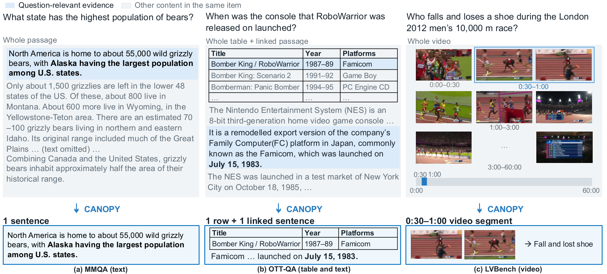
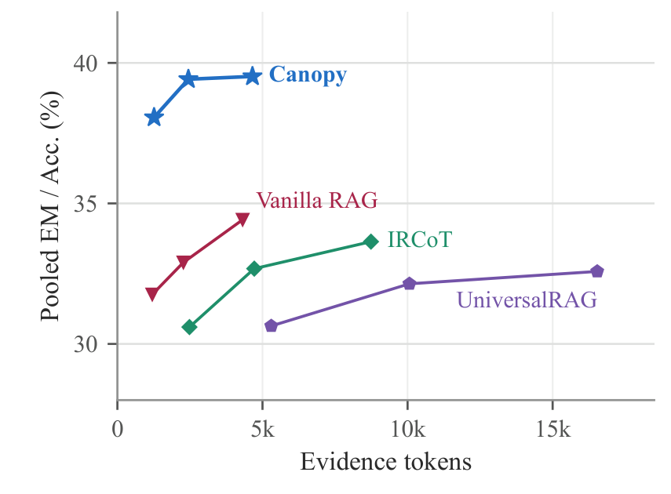
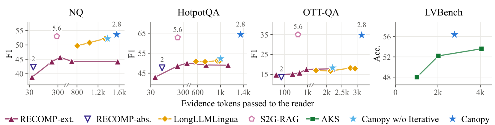
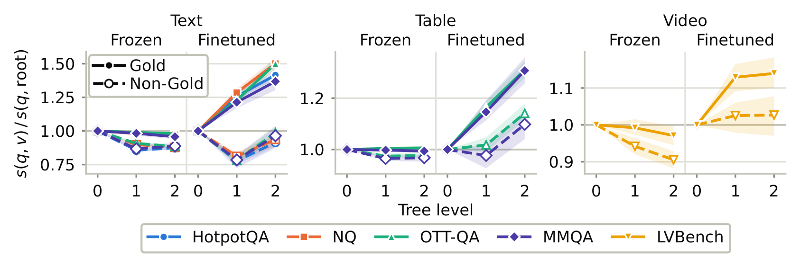

Multimodal RAG retrieves text, tables, images, and videos, but choosing a retrieval granularity does not determine how much context to retain within each item. Coarse units include irrelevant content, while uniformly fine selection can remove context needed to interpret the evidence. Existing compressors address this trade-off with modality-specific mechanisms, leaving open a shared procedure for adapting the retained extent region by region across heterogeneous items.
We introduce CANOPY (Canonical Projection over Hierarchy), a framework for adaptive-granularity post-retrieval evidence compression. CANOPY represents retrieved items as hierarchies and uses a node encoder fine-tuned on gold evidence to score regions against the query. Parent-relative refinement compares these scores to select multiple regions at different granularities without LLM calls for node-level pruning. Because compression cannot recover evidence that was never retrieved, a critic requests targeted follow-up retrieval when it judges the accumulated evidence insufficient; newly retrieved items are compressed before being added. Across five QA benchmarks over a 33M-item heterogeneous corpus, CANOPY achieves higher average answer accuracy than the evaluated retrieval baselines. Ablations indicate that additional retrieval drives the main accuracy gains on multi-hop QA. In the unrouted Qwen3-VL-8B-Instruct setting, compression reduces reader-input evidence tokens by 14.2–27.7% relative to the same iterative pipeline without compression, with comparable answer accuracy.
The evidence a question needs is usually a small part of a retrieved item: a sentence in a passage, a row in a table, a segment of a long video. Passing the whole item spends the reader's context on distractors; cutting every item to its finest pieces separates evidence from the context that makes it interpretable. Neither a coarse nor a fine unit is right for every region of every item.

That an item is relevant says nothing about which of its regions the reader needs or how much surrounding context each one requires — and these differ between regions of the same item. So the retained extent has to be decided after retrieval, region by region, not fixed per item by a query-level router.
Refinement descends into every child that scores at least as high as its parent and keeps the parent otherwise. The scores come from a node encoder fine-tuned on gold-span preferences. Nothing else is tuned: no absolute similarity threshold, no retained-unit count, and no LLM call for pruning a node.
The critic goes and gets what is missing, which is where the accuracy comes from on multi-hop questions. Compression keeps what accumulates small: 14.2–27.7% fewer reader-input tokens than the same iterative pipeline without it, at comparable accuracy.
Each retrieved item becomes a hierarchy of its own regions: the whole item at the root and minimal fragments at the leaves — sentences for text, rows for tables with the column headers kept at every level, 30-second segments for video. Images stay single nodes.
A frozen query encoder and a node encoder fine-tuned on gold-span preferences score every node against the query. From the root, a node is replaced by every child that scores at least as high as it, and kept whole when no child does. Branches stop independently, so the selected regions form an evidence forest at different depths, carrying original content rather than summaries — and no threshold, count, or LLM call decides a node.
Compression cannot recover evidence that was never retrieved. After each round a critic checks the accumulated evidence against the original question; if it is insufficient, the critic names the missing fact and issues a follow-up query, whose results are compressed before they are added, for at most three rounds.
Retrieval runs over a unified corpus of about 33M items built from the collections of NQ, HotpotQA, OTT-QA, MMQA, and LVBench: 32.4M passages, 429K tables, 57K images, and 1.5K video segments. The reader is Qwen3-VL-8B-Instruct, k = 10 items per round, at most three rounds. Evidence is retrieved, never given.
| NQ | HotpotQA | OTT-QA | MMQA | LVBench | ||||||
|---|---|---|---|---|---|---|---|---|---|---|
| Method | EM | F1 | EM | F1 | EM | F1 | EM | F1 | Acc. | Avg. |
| No Retrieval | 17.5 | 29.0 | 23.3 | 31.4 | 7.5 | 11.9 | 23.1 | 27.1 | 30.4 | 20.4 |
| Vanilla RAG single round | 38.2 | 52.6 | 38.9 | 49.7 | 12.9 | 17.5 | 40.1 | 45.9 | 34.4 | 32.9 |
| UniversalRAG routed | 35.0 | 50.4 | 36.5 | 46.7 | 10.5 | 14.4 | 36.9 | 42.0 | 41.8 | 32.1 |
| IRCoT iterative | 35.0 | 51.3 | 47.4 | 61.8 | 24.3 | 30.8 | 38.9 | 46.9 | 17.8 | 32.7 |
| CANOPY | 39.7 | 54.4 | 49.6 | 62.1 | 27.7 | 33.4 | 45.1 | 51.1 | 35.0 | 39.4 |
| CANOPY routed | 38.1 | 52.7 | 47.6 | 60.1 | 20.1 | 24.9 | 42.1 | 47.4 | 43.4 | 38.3 |

Removing iterative retrieval lowers HotpotQA and OTT-QA exact match by 10.1 and 14.9 points: on multi-hop questions the second piece of evidence becomes identifiable only after the first has been read, and a single round cannot fetch it. Removing compression instead leaves accuracy where it is — every EM change falls inside its 95% confidence interval — but raises reader-input tokens by 14.2–27.7%, because each round then adds whole items rather than the regions that were retained. Two rounds on average cost CANOPY at most 28% more tokens than single-round Vanilla RAG, and 46–88% fewer than UniversalRAG.

Measured directly on the parent–child decisions of test gold items, the fine-tuned encoder makes the right call 58.5% of the time against 36.9% for the frozen one. Downstream, the same refinement procedure descends below the root for 85–96% of items instead of 30–40%, passing 6.8–19.1% fewer reader-input tokens while F1 and accuracy stay within their confidence intervals.

Three test questions, one per modality, replayed from the run: a gold item as it was retrieved, and what CANOPY kept of it. Press Replay refinement to walk the hierarchy top-down and watch each parent–child comparison decide what the reader sees.
@misc{yun2026canopy,
title = {{CANOPY}: Adaptive-Granularity Evidence Compression
for Multimodal {RAG}},
author = {Yun, Hyojeong and Kim, Jueun and Han, Wook-Shin},
year = {2026},
eprint = {2610.00923},
archivePrefix = {arXiv},
primaryClass = {cs.IR}
}